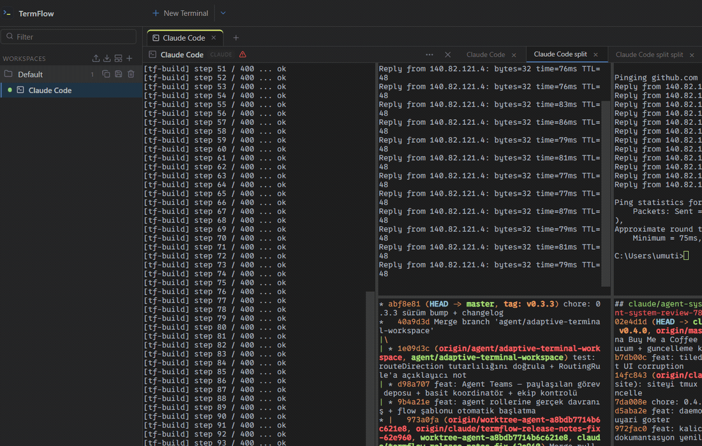
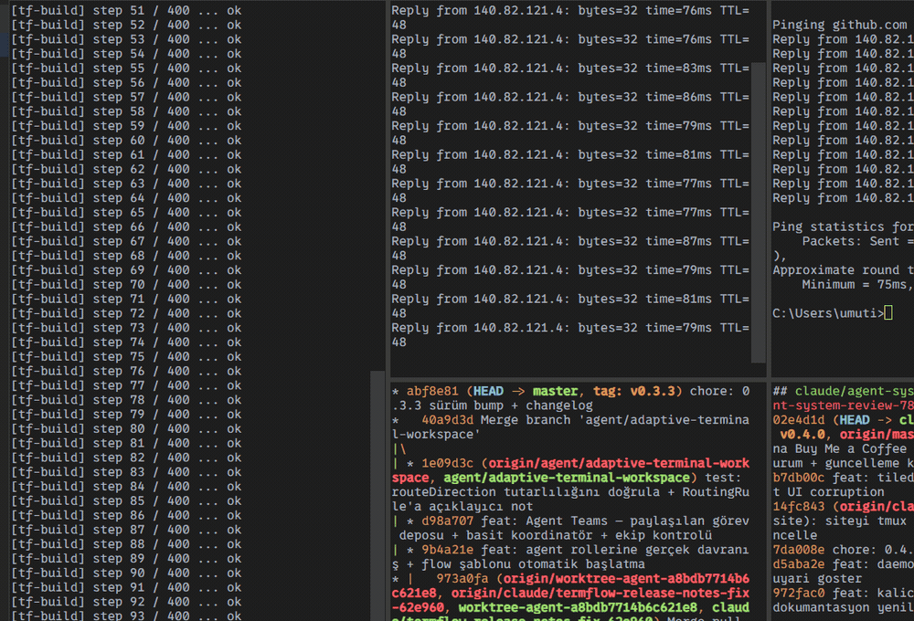
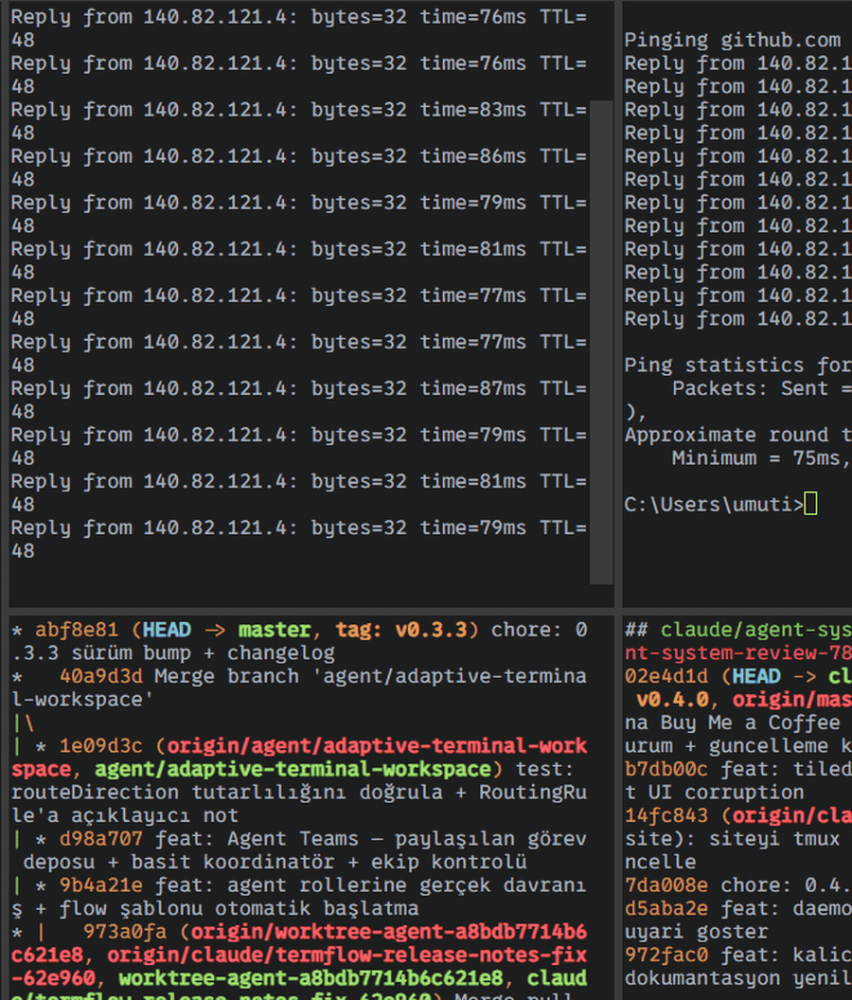
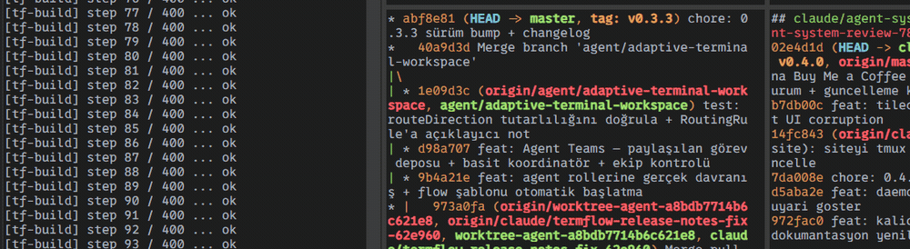
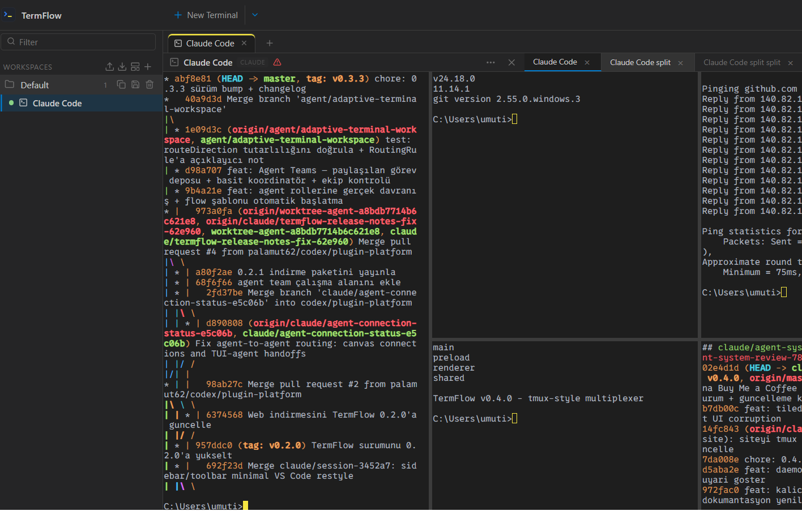
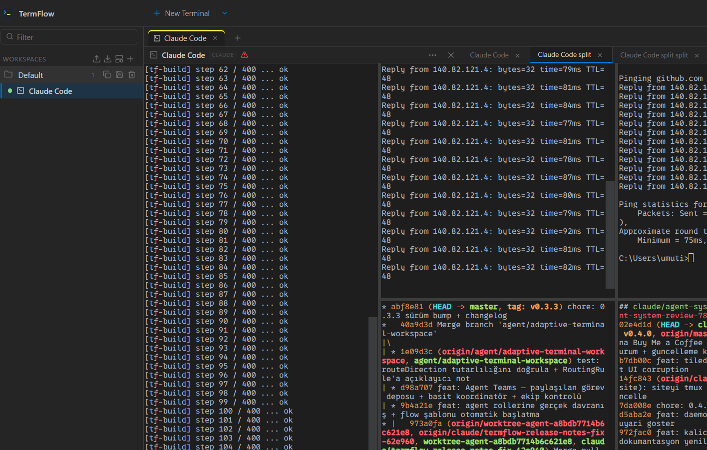
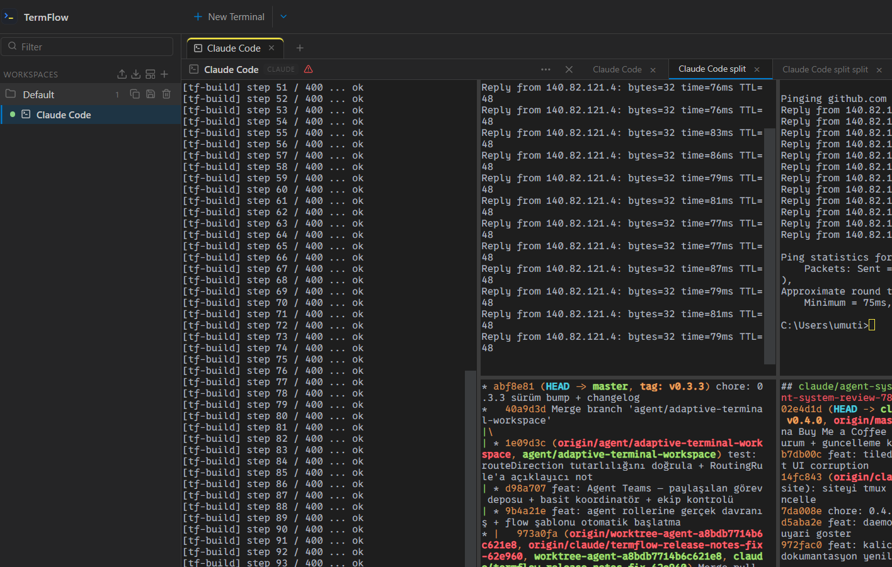
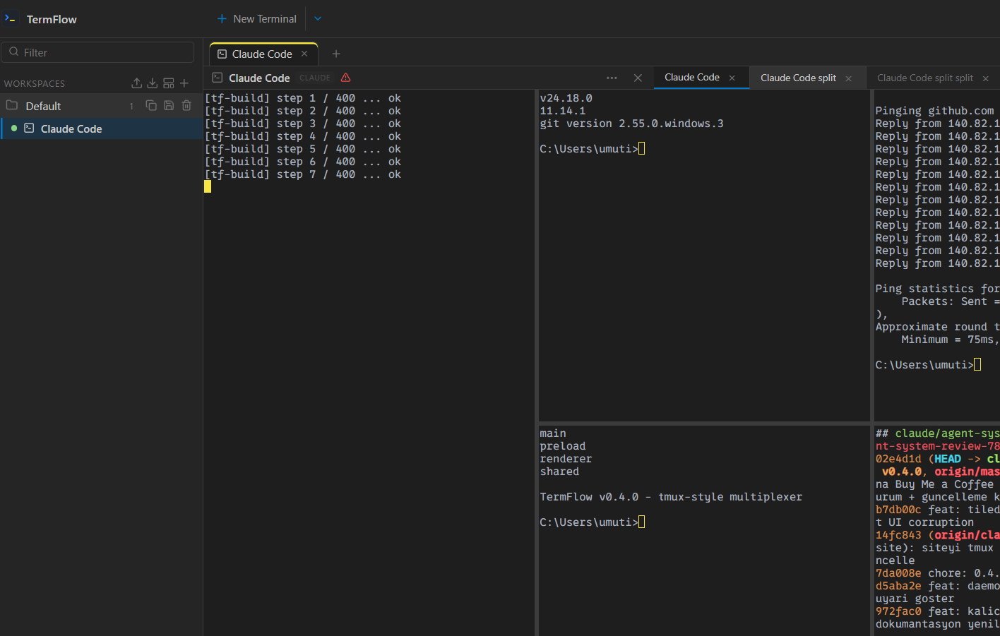
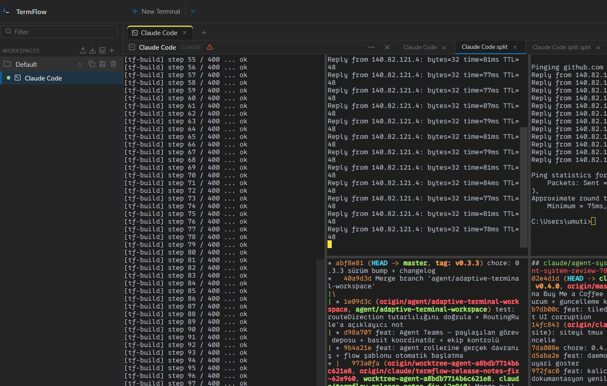

Adaptive tiled canvas
Grid, columns, rows, focus and agent-graph modes. Drag terminals to reorder, resize together, pin favorites — no overlapping windows, ever.
Run Claude Code, Codex, OpenCode and Ollama side by side with your shells on one adaptive, tiled canvas. Wire agents into flows, summarize logs with AI, record sessions, and manage git — all in a single window.

Stop juggling tabs and windows. TermFlow tiles your shells and AI agents on a single, resizable canvas built for how developers actually work.
Grid, columns, rows, focus and agent-graph modes. Drag terminals to reorder, resize together, pin favorites — no overlapping windows, ever.
Launch Claude Code, Codex, OpenCode, Ollama or custom providers like DeepSeek & OpenRouter — with truecolor, correct TUI rendering and a bypass badge.
Agent flows, agent-to-agent routing, task triggers, one-click package.json scripts, session recording and global search across every buffer.

Run several coding agents at once and watch them work. TermFlow renders Claude Code and other TUIs exactly like Windows Terminal — crisp borders, truecolor, no flicker.
~/.claude config with a safe, form-based editor
Tile everything with Auto Fit, or arrange freely in Manual mode. Drag a terminal to reorder it; the rest slide into place. Save multi-agent pipelines as reusable Flows.

Everything a project needs is one click away — health checks, scripts, git actions, an encrypted credential vault, and a plugin system you can extend yourself.
package.json scripts (npm / pnpm / yarn).castCaptured on Windows 11. Click any shot to view it full size.





A fast-moving project. Recent highlights:
Windows 10 / 11 (x64). Install once and keep your workspaces, layouts and settings on updates.